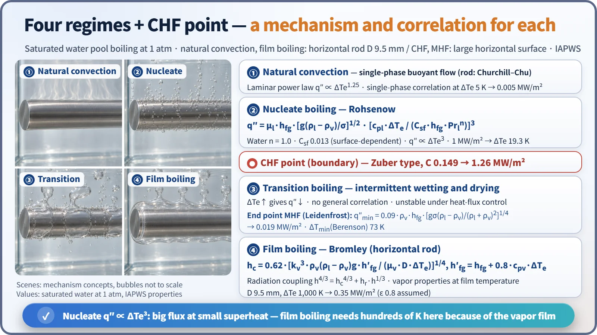
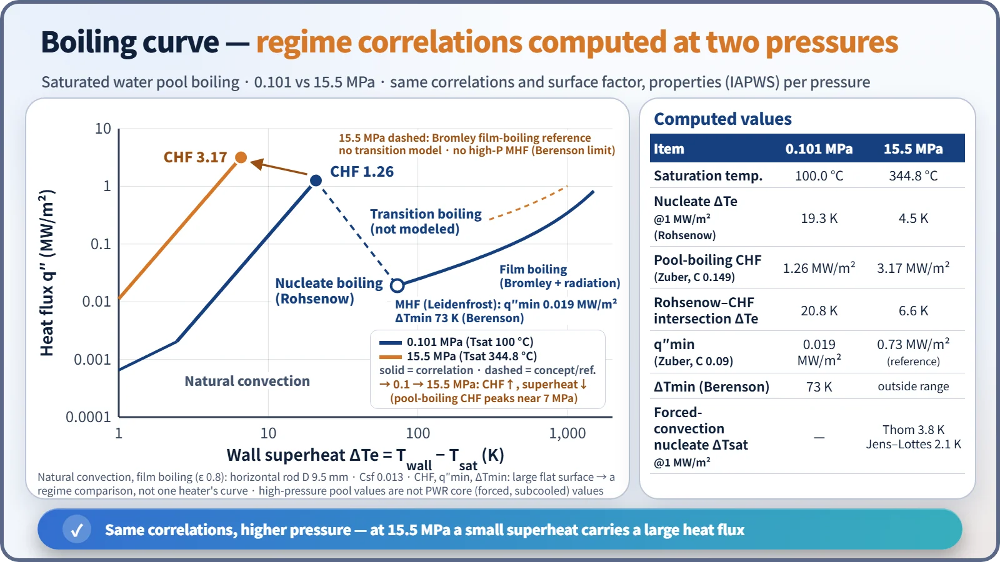
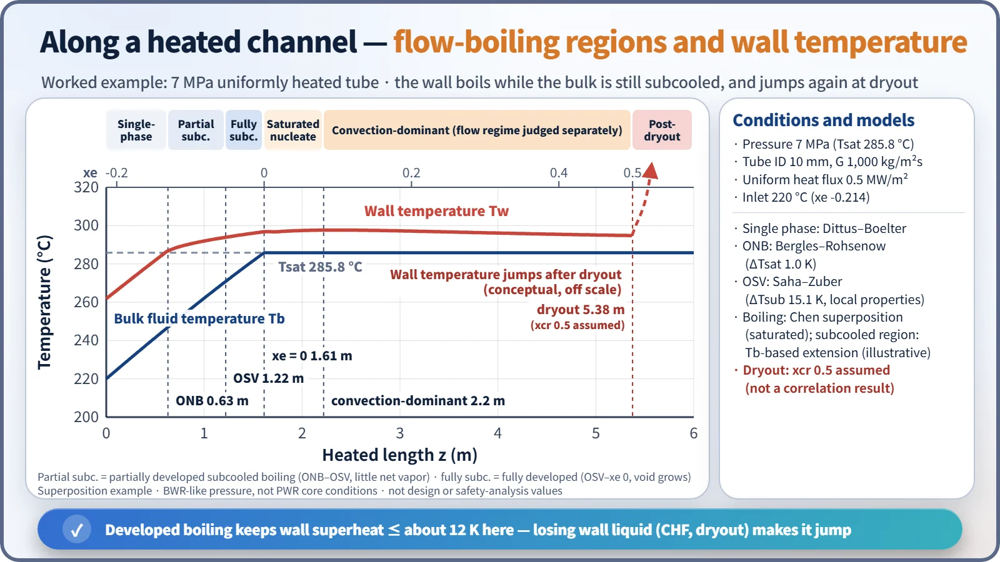
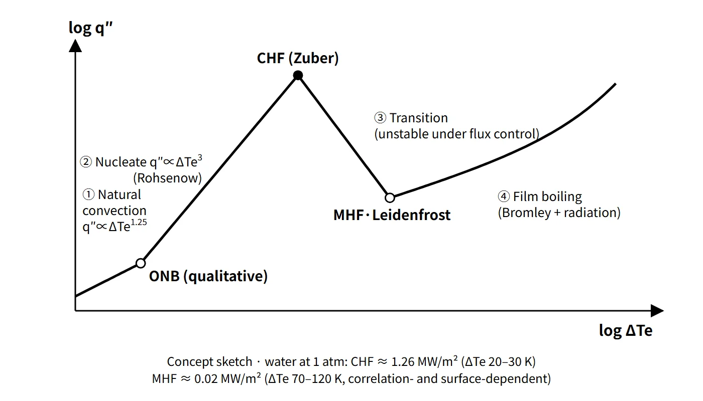
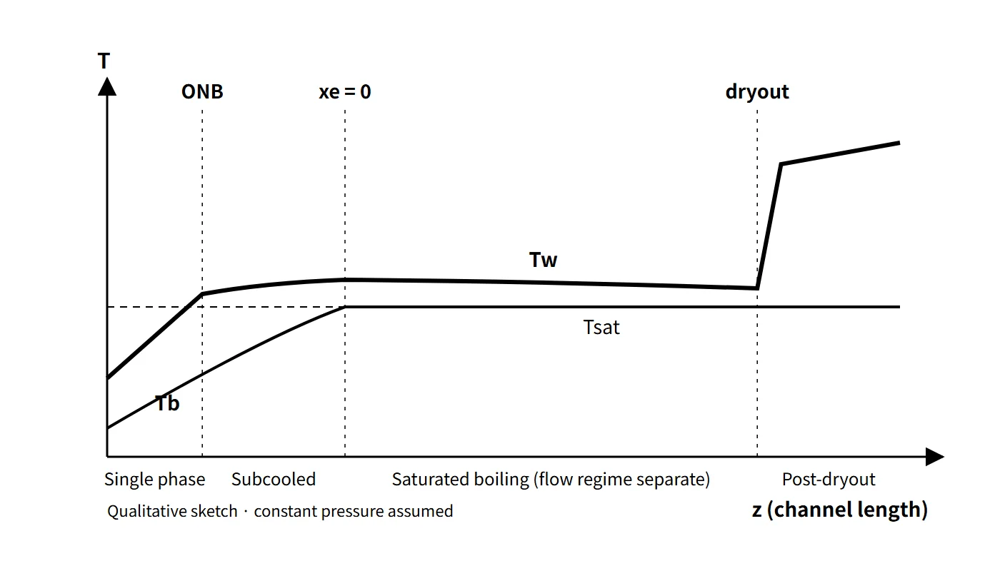

Thermal Hydraulics & Thermodynamics · C-TH-010
Boiling Curve — Correlations for the Four Regimes and the CHF Point, and How Pressure and Flow Change It
Heat flux versus wall superheat in four regimes and three boundary points, computed with Rohsenow, Zuber, Berenson and Bromley at 0.1 and 15.5 MPa.
The boiling curve is the relation between the heat flux q″ and the wall superheat of the heated surface, ΔTe = Twall − Tsat. It consists of four regimes (natural convection, nucleate boiling, transition boiling and film boiling) and their boundary points (ONB, CHF, and the minimum film boiling point = Leidenfrost point), and each regime has its own governing mechanism and correlations.
This note focuses on calculating the curve directly from correlations and on how pressure and flow change it.
Principle and mechanism
Four regimes + the CHF point, a different equation for each
| Regime / point | Mechanism | Representative correlation | Trend |
|---|---|---|---|
| ① Natural convection | Single phase, buoyancy-driven convection | Nu = C·Raⁿ | q″ ∝ ΔTe1.25 (laminar) |
| ONB | Bubble nucleation begins in wall cavities | (flow) Bergles–Rohsenow | Depends on pressure and heat flux |
| ② Nucleate boiling | Bubble growth and departure stir the boundary layer; latent heat transport | Rohsenow | q″ ∝ ΔTe³ |
| CHF point | Hydrodynamic instability of vapor columns blocks the liquid supply | Zuber type | Maximum heat flux |
| ③ Transition boiling | Local vapor films form and break repeatedly; unstable under heat-flux control | No general correlation (empirical) | q″ falls as ΔTe rises |
| MHF point (Leidenfrost) | Lowest condition at which a vapor film can just be sustained | Zuber q″min, Berenson ΔTmin | Minimum heat flux |
| ④ Film boiling | Conduction through the vapor film + radiation at high temperature | Bromley (cylinder) | Rises again |
The Rohsenow correlation is q″ = μl·hfg·[g(ρl − ρv)/σ]1/2·[cpl·ΔTe/(Csf·hfg·Prlⁿ)]³. For water n = 1.0, and Csf is a constant for the surface–liquid combination (water–polished stainless steel 0.013, water–copper 0.0068, etc.). Because the superheat is proportional to Csf, the superheat at the same heat flux can differ by nearly a factor of two depending on surface condition. Rohsenow values should therefore be read with an error of "around ±100 %" in mind.
For film boiling, the Bromley correlation for a horizontal cylinder is h = 0.62·[kv³·ρv(ρl − ρv)g·h′fg/(μv·D·ΔTe)]1/4, where h′fg = hfg + 0.8·cpv·ΔTe is the modified latent heat that adds the sensible heat of the vapor film. Once the wall exceeds a few hundred °C, radiation becomes significant, and the two are combined as h4/3 = hconv4/3 + hrad·h1/3 (when hrad is small, h ≈ hconv + ¾·hrad).

For water at 1 atm, the results are CHF 1.26 MW/m², intersection of the Rohsenow curve with CHF at ΔTe 20.8 K, q″min 0.019 MW/m² and ΔTmin 73 K (wall about 173 °C). These are of the same order as the textbook schematic values "about 30 K at CHF, about 120 K at Leidenfrost", but ΔTmin comes out noticeably smaller. The Berenson correlation is based on smooth horizontal flat plates; under real conditions with surface roughness, oxide layers and subcooling, the measured Leidenfrost temperature is often higher. By coincidence, the Bromley value at ΔTmin (0.019) is almost identical to the Zuber q″min, so the two correlations join smoothly at the minimum point.
Leidenfrost temperature
The Leidenfrost temperature is the lowest wall temperature at which film boiling can be sustained (TMFB, Tmin). The name comes from water droplets that float on a vapor layer and skitter for a long time on a hot pan; in droplet experiments it is measured as the temperature at which the evaporation lifetime is longest. It is not a material constant: it varies strongly with pressure, surface roughness and oxide layers, liquid subcooling and flow velocity. The larger the subcooling or the rougher the surface, the more easily the vapor film breaks down and the higher Tmin becomes.
Onset of nucleate boiling (ONB), subcooled and saturated boiling
In a flow channel, bubbles form in wall cavities once the wall temperature slightly exceeds the saturation temperature, even if the bulk liquid is below saturation. This is subcooled boiling. For water, the ONB is obtained from the Bergles–Rohsenow correlation q″ = 1082·p1.156·(1.8ΔTsat)^(2.16/p0.0234) (p in bar, q″ in W/m²). At q″ = 0.5 MW/m² the ONB superheat is 9.5 K at 1 atm and 1.0 K at 7 MPa. The higher the pressure, the smaller the superheat at which boiling starts.
Subcooled boiling is divided into two stages. Just after ONB, bubbles stay attached to the wall and condense there (partial subcooled boiling); as subcooling decreases further, bubbles leave the wall and the net vapor volume begins to grow. This point is the OSV (onset of significant void, also called net vapor generation, NVG). The Saha–Zuber correlation gives that subcooling as St = q″/(G·cpl·ΔTsub) = 0.0065 for Pe > 70,000 and Nu = q″D/(kl·ΔTsub) = 455 below that. When the bulk reaches saturation (xe ≥ 0), it is saturated boiling.
How pressure changes the boiling curve
Keeping the correlations and the surface factor (Csf) fixed and changing only the properties with pressure shows the pressure effect directly (properties from the iapws package: IF97 thermodynamic properties with the IAPWS transport-property and surface-tension equations). At 15.5 MPa the nucleate-boiling superheat at 1 MW/m² drops from 19.3 K to 4.5 K, and the pool-boiling CHF rises from 1.26 to 3.17 MW/m². CHF does not, however, increase monotonically with pressure. The Zuber correlation gives a maximum near about 7 MPa (4.5 MW/m²), and toward the critical pressure hfg and σ go to zero so it falls again (1.5 MW/m² at 20 MPa). For high-pressure film boiling, the Berenson correlation gives ΔTmin of about 420 K, but as a low-pressure correlation for horizontal surfaces it lacks reliability at high pressure, so the MHF is not shown. Transition boiling is not modeled at either pressure because there is no general correlation.

A PWR core is not in pool boiling but in forced-convection subcooled conditions at 15.5 MPa. The actual nucleate-boiling superheat at 1 MW/m² is 3.8 K from the Thom correlation ΔTsat = 22.65·q″1/2·e^(−p/8.7) (q″ in MW/m², p in MPa) and 2.1 K from the Jens–Lottes correlation. In other words, the cladding surface is held only a few K above the saturation temperature.
Following a heated channel — the flow-boiling regions
Following a uniformly heated tube, the regimes of the boiling curve unfold in space. A calculation for 7 MPa, inner diameter 10 mm, G 1,000 kg/m²s, 0.5 MW/m² and an inlet temperature of 220 °C proceeds in this order:
- Single-phase liquid convection: the wall temperature rises in parallel with the fluid temperature.
- ONB (0.63 m): when the wall reaches Tsat + 1.0 K, partial subcooled boiling begins.
- OSV (1.22 m, subcooling 15.1 K): transition to fully developed subcooled boiling.
- xe = 0 (1.61 m): saturated nucleate boiling begins.
- Convective term dominant (beyond about 2.2 m): as quality rises the two-phase velocity increases and the forced-convection term overtakes the nucleate-boiling term. The wall superheat actually decreases slightly (this is separate from flow-regime identification).
- Dryout: when the annular liquid film dries out, the wall temperature rises sharply (the example assumes a critical quality of 0.5).

Once boiling develops, the wall superheat stays at a maximum of about 12 K in this example. The advantage of nucleate boiling is that the wall temperature hardly changes even when the heat flux changes. The danger begins the moment the wall loses contact with the liquid, that is, at CHF (DNB or dryout).
What it means in a plant
- Design: light water reactors are designed to keep the core in the nucleate-boiling regime or below. A PWR allows local subcooled boiling in the upper part of the hot channel but does not allow DNB. In a BWR, saturated boiling in the core is normal and dryout (MCPR) is the limit.
- Operation: in subcooled boiling zones, evaporation at the wall causes CRUD deposition and boron concentration, which leads to axial offset anomalies (AOA).
- Accidents: if CHF occurs during LOCA blowdown, the cladding moves into transition and film boiling. During reflood, quenching and rewetting occur only after the cladding cools below the Leidenfrost temperature (Tmin). That is why Tmin is a key variable for the film-boiling decision in system codes. TRACE uses the larger of the Groeneveld–Stewart value and 725 K.
- PWR designs (e.g. APR1400, OPR1000): the DNBR confirms that the core stays in the nucleate-boiling regime in normal operation and AOOs; for LOCA, post-CHF behavior is evaluated against the ECCS performance criteria.
Regulatory and design criteria
The criteria below are examples from the United States (US NRC).
| Basis | Gist |
|---|---|
| 10 CFR 50 Appendix A, GDC 10; SRP 4.4 | SAFDLs not exceeded; PWR 95/95 no DNB |
| 10 CFR 50 Appendix K, I.C.4.e | Once CHF is predicted at a location during blowdown, no return to nucleate-boiling correlations there (rewetting allowed during reflood if justified) |
| 10 CFR 50 Appendix K, I.C.5 | Post-CHF correlations must predict at or below the data average: Groeneveld film boiling, McDonough–Milich–King transition boiling, etc.; Dougall–Rohsenow not to be used under non-conservative conditions |
| 10 CFR 50.46(b) | ECCS performance criteria for light water reactors (PCT 1,204 °C, etc.) |
The physics of the boiling curve has not changed for decades. For LOCA criteria, 10 CFR 50.46c was withdrawn by the SRM of 2024.4.11 and has not been issued, so the current 50.46(b) and Appendix K are cited.
Easily confused pairs
| Item | Nucleate boiling | Film boiling |
|---|---|---|
| Wall–liquid contact | Maintained (bubbles form at points and depart) | Vapor film completely covers the wall |
| Heat transfer path | Latent heat + boundary-layer agitation | Conduction through the vapor film + radiation |
| Heat flux vs superheat | q″ ∝ ΔTe³, small superheat | Hundreds of K for the same heat flux |
| Representative correlations | Rohsenow, Thom, Chen | Bromley, Berenson, Groeneveld |
| In a plant | Allowed in normal operation | After CHF; avoided, or evaluated in accidents |
| Item | ONB | OSV | CHF | MHF (Leidenfrost) |
|---|---|---|---|---|
| Meaning | Boiling begins | Net vapor generation begins | End of nucleate boiling (maximum heat flux) | End of film boiling (minimum heat flux) |
Subcooled and saturated boiling are distinguished by the state of the bulk fluid (xe < 0 / xe ≥ 0). In both cases the wall is above the saturation temperature.
Key points at a glance
- Definition: boiling curve = heat flux q″ versus wall superheat ΔTe; four regimes + the CHF point.
- Natural convection: single phase, q″ ∝ ΔTe1.25, ends at ONB.
- Nucleate boiling: bubble nucleation and departure, q″ ∝ ΔTe³ (Rohsenow), large heat flux at small superheat.
- CHF: hydrodynamic instability (Zuber), about 1.26 MW/m² for water at 1 atm.
- Transition boiling: partial vapor film, q″ falls as ΔTe rises, unstable on a heat-flux-controlled surface.
- Leidenfrost (MHF): lowest wall temperature for film boiling, ΔTe about 70–120 K for water at 1 atm (correlation- and surface-dependent).
- Film boiling: conduction through the vapor film + radiation (Bromley); needs a large superheat.
- Higher pressure: smaller nucleate-boiling superheat; pool-boiling CHF peaks at intermediate pressure (about 7 MPa by the Zuber calculation).
- Flow boiling: single phase → ONB → subcooled boiling (OSV) → saturated nucleate boiling → two-phase forced convection (annular flow) → dryout.
- In a plant: keep the core in nucleate boiling (DNBR, MCPR); in LOCA reflood, quenching requires cooling below Tmin.
- Naming: CHF and MHF are boundary points, not regimes; numbers quoted for water at 1 atm depend on the correlation and the surface.

